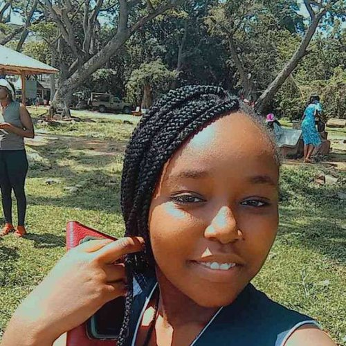

About Me
I am an Environmental Science undergraduate at Jomo Kenyatta University of Agriculture and Technology (JKUAT) passionate about conservation and sustainable resource management. I enjoy applying classroom theory through fieldwork, environmental observation, and data recording. My goal is to build practical field skills and contribute to meaningful environmental monitoring and sustainability initiatives.
Fun fact: A small, thoughtful gesture means more to me than an expensive gift.
See my academic journeyQuick Facts
- Programme: BSc. Environmental Science (Conservation & Sustainable Resource Management)
- Year of Study: Second Year (2025 – Present)
- Country: Kenya (Based in Juja)
- Dream Job: Environmental Scientist
Environmental Fact of the Day
Healthy wetland ecosystems act as natural water filters, trapping pollutants and sediments while absorbing floodwaters and storing significant amounts of carbon.